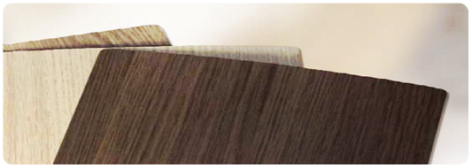
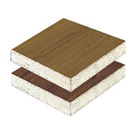
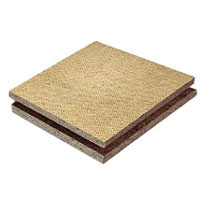
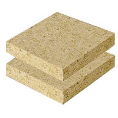
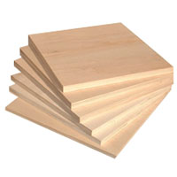

Материалы для изготовления мебели

Особенности и отличия, недостатки и преимущества разбираемся вместе.
Для того чтобы выбор материала для собственного шкафа или комода был осмысленным, необходимо знать достоинства и недостатки мебельных материалов. Чем, например отличается ДСП от МДФ? Насколько дешевле мебель, если купить необработанный лист ДСП и затем его заламинировать, чем платить за ламинированный ДСП? Какие вообще материалы используются для производства современной мебели.
ДСП (древесно-стружечная плита)
ДСП изготавливается из древесных опилок и стружек, пропитанных связывающим веществом, а именно — формальдегидными смолами. ДСП - самый распространенный материал для корпусной мебели, встроенных шкафов и оформления интерьеров. ДСП широко применяется и в строительстве - возведении крыш и перегородок. Для кухонь и ванн используется специальный вид ДСП — с повышенной влагостойкостью.
Все более широкую популярность набирают ДСП сверхлегкие и огнеупорные. Благодаря своей невысокой стоимости и великолепным строительным свойствам ДСП — самый широко используемый материал для изготовления мебели эконом-класса. Большая часть офисной мебели производится именно из ДСП.
Однако есть у этого материала и свои минусы - это вредные формальдегидные выделения.
Формальдегиды при большой концентрации их воздухе - опасны для человека. По экологическим стандартам разделяют ДСП класса Е1 и класса Е2. ДСП класса Е1 отличается большей экологической чистотой, показатель эмиссии формальдегида у нее заметно ниже и производители всячески борются за сведение этого значения к минимуму.
Самые жесткие требования по выделениям формальдегида из ДСП - в Японии. ДСП класса Е2 имеют менее жесткий стандарт по выделению формальдегидов. Мебель из ДСП класса Е2 запрещается использовать для детских помещений. Итак, резюмируем:
|
Плюсы ДСП:
Минусы ДСП:
|
ЛДСП (ламинированная ДСП) Ламинированный ДСП (ЛДСП) - как это уже понятно из названия - облицованная пленкой (бумажно-смоляными пленками) ДСП, ДСП с меламиновым покрытием. Ламинат или пленка получается из бумаги определенного орнамента, фактуры (имитации пород дерева). После пропитки меламиновой смолой бумага становится жесткой и хрупкой; затем с помощью прессования пленка надежно соединяется с поверхностью ДСП. Существует два метода соединения пленки с поверхностью ДСП - ламинирование и каширование. Каширование - процесс облицовки ДСП полностью отвержденными бумажно-смоляными пленками с предварительным нанесением на плиту-основу клеевого состава. Ламинирование - процесс нанесения декоративного покрытия под действием давления и воздействия температуры. Ламинирование считается более надежным и дорогим способом изготовления ЛДСП. Вне зависимости от способа нанесения такое ДСП называется ДСП с меламиновым покрытием. Оно широко используется для изготовления мебели, заполнения двери типа купе и прочих эдементов декора интерьера. |
|
Плюсы ЛДСП:
Минусы ЛДСП:
|
ДВП (древесно-волокнистая плита) Древесноволокнистая плита - это ничто иное как хорошо всем известный оргалит. Оргалит - основной материал для изготовления задних стенок шкафов, днищ выдвижных ящиков недорогой мебели (в более дорогой мебели, как правило, применяют фанеру, как более устойчивый к нагрузкам и механическому воздействию материал). ДВП получается горячим прессованием массы, состоящей из целлюлозных волокон, воды, синтетических полимеров и специальных добавок (такой метод еще называется "метод мокрого прессования"). Именно поэтому тыльная сторона ДВП имеет такую специфическую фактуру - "сеточкой". Лицевая сторона ДВП, как правило облицовывается - покрывается меламиновой пленкой. Из-за технологических особенностей производства ДВП - ДВП не бывает толстой. |
|
Плюсы ДВП:
Минусы ДВП:
|
МДФ (MDF, Medium Density Fiberboard - Древесно-волокнистые плиты средней плотности) МДФ плита - разновидность ДВП плит, обладающая лучшими качествами и имеющая широкий спектр применения. При изготовлении МДФ плит содержание вредных формальдегидных смол ничтожно и сравнимо с выделениями формальдегидов натуральным деревом. Плита МДФ обладает очень высокими показателями экологичности. Благодаря более мелкой и однородной текстуре и специфичной технологии производства, плита МДФ более прочная чем плита ДСП (почти вдвое), устойчива к воздействию влаги и огня. МДФ плиты нашли широкое применение в строительстве (из МДФ делают пол, стены, потолки), производстве мебели и еще многих других отраслях не связанных со строительством. В частности МДФ используется для изготовления акустических систем. |
Плюсы МДФ:
Минусы МДФ:
|
Фанера (древесно-слоистые листы) Фанера - многослойный строительный материал, изготавливается путем склеивания листов шпона. Толщина фанеры варьирует в зависимости от толщины слоя шпона и количества слоев. Чтобы фанера была прочной, слои шпона накладываются так, чтобы волокна древесины были строго перпендикулярны предыдущему листу. Благодаря продольно-поперечному направлению волокон шпона, в слоях листа достигается особая прочность, а следовательно - долговечность, ударопрочность, устойчивость к нагрузкам. Особенность производства фанеры определяют ее востребованность в строительстве и производстве мебели в частности. Фанера имеет эстетичный внешний вид, экологически безвредна. Фанера - достаточно легкий материал. Эти отличительные качества обусловили широкое применение фанеры при производстве мебели, в том числе детской. Сейчас на рынке представлен большой ассортимент разновидностей фанеры: огнеупорная, влагостойкая, фанера с повышенной прочностью. |
Плюсы фанеры:
Минусы фанеры:
|